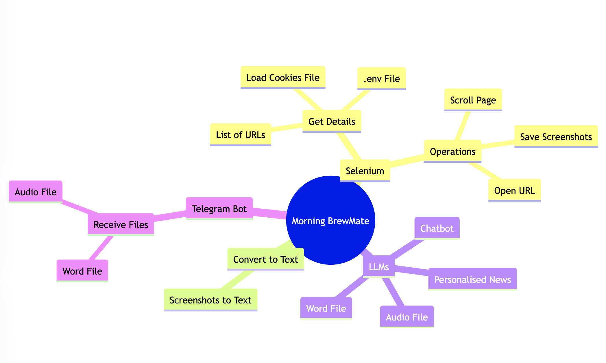
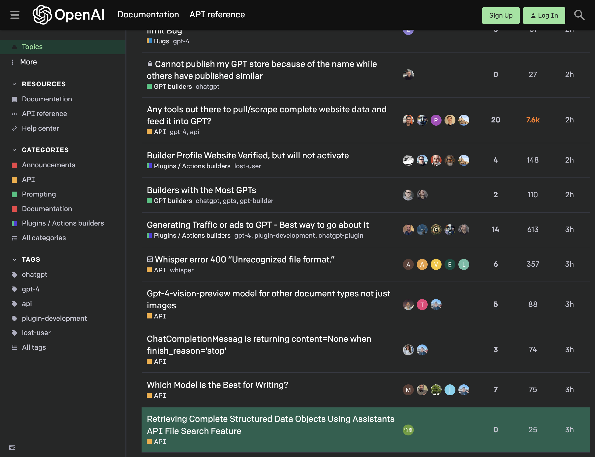
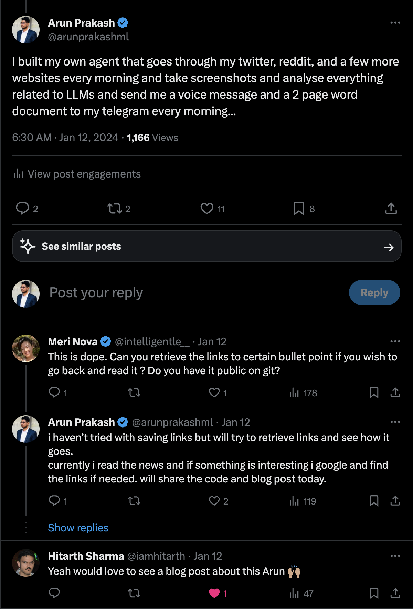
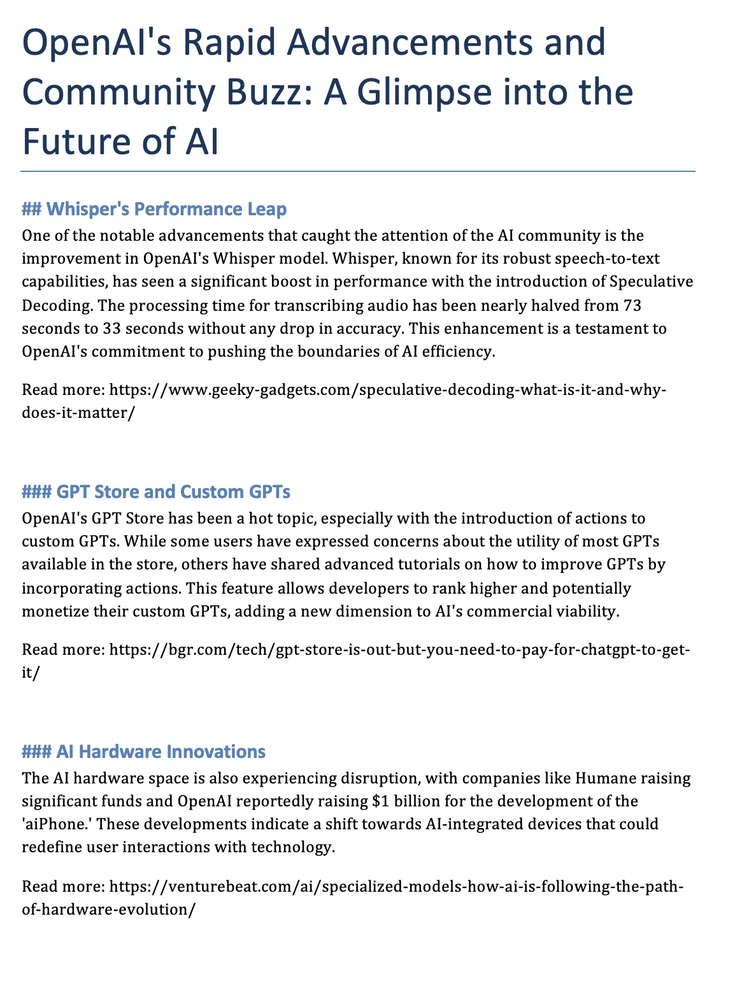
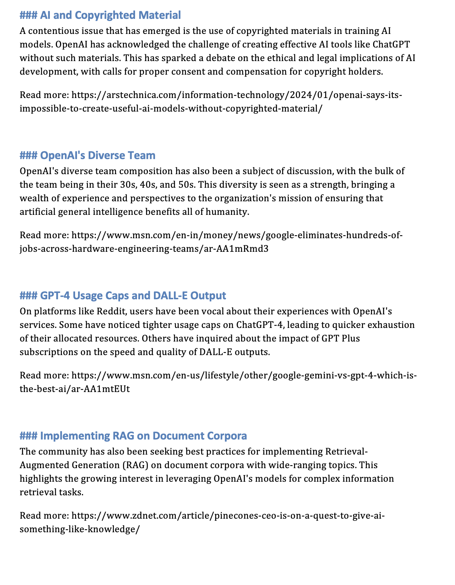
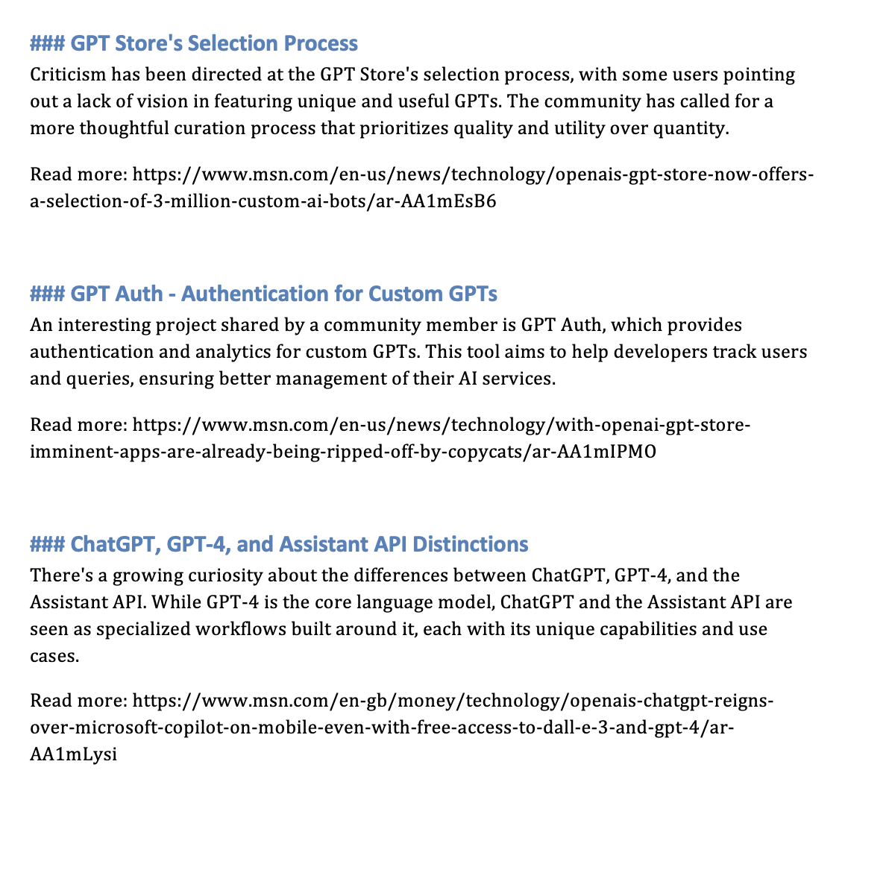
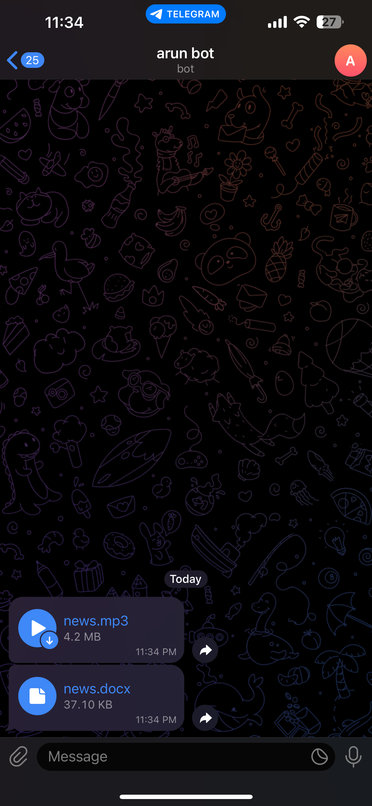

# !pip install selenium
# !pip install webdriver-manager
# !pip install fpdf
# !pip install python-telegram-bot
# !pip install nest_asyncioImagine a tool that transforms your morning routine into a seamless experience, where the latest updates on generative AI, large language models (LLMs), OpenAI, and more are delivered directly to you, not through the usual scrolling and searching, but through a personalized audio news briefing. This innovative project does just that. It autonomously navigates through your Twitter, Reddit, GitHub, and other websites, capturing screenshots as it scrolls through the feeds. These images are then analyzed to curate news content that aligns with your interests.
The magic doesn’t end there. This curated content is converted into an audio format and accompanying text documents with source urls, which are then sent to your Telegram. As you sip your morning coffee, you can listen to the latest developments in your fields of interest. If a particular story piques your curiosity, you can delve deeper by exploring the links provided. This not only saves you time but also ensures you’re always informed about the topics that matter to you. Gone are the days of manually sifting through various accounts for relevant news. Now, your custom news comes to you, allowing you to start your day informed and inspired.
In this blog post, I go through the different components and technologies I used to build this project.
Tools and Technologies
- Selenium: This web browser automation tool is used to navigate various websites and capture screenshots, effectively simulating the process of browsing through social media feeds.
- Tesseract: This Optical Character Recognition (OCR) tool is employed to extract text from the screenshots captured by Selenium, turning images into readable and analyzable text.
- OpenAI API: This API is utilized for Large Language Models (LLMs), which are crucial for understanding and interpreting the text extracted from the screenshots.
- Telegram API: This API is used to send the curated news content, in both audio and text formats, directly to your Telegram messages.
- Streamlit: This open-source app framework is used to build the web application and chatbot that facilitate the user interaction with the tool.
- EditThisCookie: This browser extension is used to extract cookies from the browser, enabling the tool to log into your social media accounts.
- OpenAI Assistants API: This API is used to create a personalized chatbot, enhancing the tool’s ability to interact with users and provide customized content.

Download Screenshots
from selenium import webdriver
from selenium.webdriver.chrome.service import Service
from webdriver_manager.chrome import ChromeDriverManager
from selenium.webdriver.chrome.options import Options
from selenium.webdriver.common.by import By
from selenium.webdriver.common.alert import Alert
from selenium.common.exceptions import NoSuchElementException, NoAlertPresentException
import time
import json
import os
def setup_driver():
"""
Sets up and returns a Chrome WebDriver.
"""
chrome_options = Options()
chrome_options.add_argument("--disable-notifications")
return webdriver.Chrome(service=Service(ChromeDriverManager().install()), options=chrome_options)
def setup_headless_driver():
"""
Sets up and returns a headless Chrome WebDriver with a user agent that mimics a supported browser.
"""
user_agent = "Mozilla/5.0 (Windows NT 10.0; Win64; x64) AppleWebKit/537.36 (KHTML, like Gecko) Chrome/98.0.4758.102 Safari/537.36"
chrome_options = Options()
chrome_options.add_argument("--headless") # Enables headless mode
chrome_options.add_argument(f"user-agent={user_agent}") # Sets user agent to a supported browser version
chrome_options.add_argument("--no-sandbox") # Bypass OS security model
chrome_options.add_argument("--disable-dev-shm-usage") # Overcome limited resource problems
chrome_options.add_argument("--disable-gpu") # Applicable to windows os only
chrome_options.add_argument("--disable-extensions") # Disabling extensions
chrome_options.add_argument("--disable-dev-shm-usage") # Overcome limited resource problems
chrome_options.add_argument("--window-size=1920,1080") # Specify the window size
chrome_options.add_argument("--disable-notifications") # Disable notifications
return webdriver.Chrome(service=Service(ChromeDriverManager().install()), options=chrome_options)
def load_and_add_cookies(driver, website_url, cookies_file=None):
"""
Loads a given website and adds cookies from a specified file.
:param driver: The WebDriver instance.
:param website_url: URL of the website to load.
:param cookies_file: Path to the cookies file in JSON format.
"""
driver.get(website_url)
# if cookies file
if cookies_file:
with open(cookies_file, "r") as cookiesfile:
cookies = json.load(cookiesfile)
for cookie in cookies:
if 'sameSite' in cookie and cookie['sameSite'] not in ['Strict', 'Lax', 'None']:
cookie['sameSite'] = 'None'
driver.add_cookie(cookie)
def capture_scroll_screenshots(driver, url, num_screenshots, screenshot_prefix):
"""
Captures and saves a specified number of screenshots while scrolling through a webpage.
:param driver: The WebDriver instance.
:param url: URL of the page to capture.
:param num_screenshots: Number of screenshots to take.
:param screenshot_prefix: Prefix for naming the screenshot files.
"""
driver.get(url)
time.sleep(2)
for i in range(1, num_screenshots + 1):
try:
# Check for the presence of the notification popup and close it
notification_popup = driver.find_element(By.XPATH, '//div[contains(@style, "notification")]//button[text()="Block"]')
notification_popup.click()
except NoSuchElementException:
# If no popup, do nothing
pass
except NoAlertPresentException:
# Handle the case where the alert is not present
pass
driver.save_screenshot(f'screenshots/{screenshot_prefix}_{i}.png')
# Scroll to the bottom of the page
driver.execute_script("window.scrollTo(0, document.body.scrollHeight);")
time.sleep(1)
def get_content():
"""
Main function to perform web scraping tasks.
"""
driver = setup_driver() # use this for local
#driver = setup_headless_driver() # use this for colab
# Twitter
load_and_add_cookies(driver, "https://www.twitter.com", "twitter_cookies.json")
capture_scroll_screenshots(driver, "https://twitter.com/search?q=openai&src=typeahead_click", 5, 'twitter_screenshot')
# Reddit
load_and_add_cookies(driver, "https://www.reddit.com", "reddit_cookies.json")
capture_scroll_screenshots(driver, "https://www.reddit.com/r/OpenAI/", 5, 'reddit_screenshot')
#openai
load_and_add_cookies(driver, "https://community.openai.com/")
capture_scroll_screenshots(driver, "https://community.openai.com/", 3, 'openai_screenshot')
# github
load_and_add_cookies(driver, "https://github.com/trending")
capture_scroll_screenshots(driver, "https://github.com/trending", 3, 'github_screenshot')
# hackernews
load_and_add_cookies(driver, "https://news.ycombinator.com/news")
capture_scroll_screenshots(driver, "https://news.ycombinator.com/news", 1, 'hackernews_screenshot')
driver.quit()
get_content()
The above script is a web scraping tool that uses Selenium WebDriver to automate browser interactions and capture screenshots from various websites. The script is organized into several functions, each with a specific role in the web scraping process.
The setup_driver and setup_headless_driver functions initialize a Chrome WebDriver instance, with the latter setting up a headless browser (a browser without a user interface). The load_and_add_cookies function navigates to a specified URL and loads cookies from a JSON file, if provided. This can be useful for maintaining session data or preferences across multiple browsing sessions. The capture_scroll_screenshots function navigates to a given URL, handles potential pop-up notifications, captures a specified number of screenshots while scrolling through the page, and saves these screenshots with a given prefix.
The get_content function is the main driver of the script. It sets up the WebDriver, loads cookies, and captures screenshots for several websites, including Twitter, Reddit, OpenAI Community, GitHub, and Hacker News. After all tasks are completed, the WebDriver is closed. This script is a practical example of how web scraping can be used to automate data collection from multiple sources that we will be utilizing in this project.
For account login, we can use EditThisCookie to extract cookies from the browser. This extension allows us to export cookies from the browser in a JSON file, which can then be loaded into the script using the load_and_add_cookies function. This enables the script to log into your social media accounts and capture screenshots of your feeds.
Screenshots to Text
I attempted to convert screenshots to text using various AI models. Initially, I used GPT-4 Vision models, but they were unable to process images containing people, which made them unsuitable for social media images. I then tried Gemini Pro Vision, but the results did not meet my expectations. Finally, I used Tesseract, an open-source text recognition engine, which provided excellent results.
screenshots_folder = 'screenshots'twitter_files = [f for f in os.listdir(screenshots_folder) if f.startswith('twitter_screenshot')]
reddit_files = [f for f in os.listdir(screenshots_folder) if f.startswith('reddit_screenshot')]
openai_files = [f for f in os.listdir(screenshots_folder) if f.startswith('openai_screenshot')]
github_files = [f for f in os.listdir(screenshots_folder) if f.startswith('github_screenshot')]
hackernews_files = [f for f in os.listdir(screenshots_folder) if f.startswith('hackernews_screenshot')]twitter_files['twitter_screenshot_2.png',
'twitter_screenshot_3.png',
'twitter_screenshot_1.png',
'twitter_screenshot_4.png',
'twitter_screenshot_5.png']
from PIL import Image
import pytesseract
# Load the image from file
image_path = f"{screenshots_folder}/{openai_files[0]}"
image = Image.open(image_path)
# Use tesseract to do OCR on the image
text = pytesseract.image_to_string(image)
text"oo OG GO\n\nG OpenAl\n\nTopics\n\nMore\n\nRESOURCES\nDocumentation\nAPI reference\n\nHelp center\n\nCATEGORIES\nAnnouncements\n\nAPI\n\nPrompting\nDocumentation\n\nPlugins / Actions builders\n\nAll categories\n\nTAGS\n\nchatgpt\n\ngpt-4\n\napi\nplugin-development\nlost-user\n\nAlltags\n\nDocumentation\n\nAPI reference\n\nHM DUg\nHi Bugs gpt-4\n\n@ Cannot publish my GPT store because of the name while\n\nothers have published similar\n™@ GPT builders chatgpt\n\nAny tools out there to pull/scrape complete website data and\n\nfeed it into GPT?\nH API gpt-4, api\n\nBuilder Profile Website Verified, but will not activate\n® Plugins / Actions builders lost-user\n\nBuilders with the Most GPTs\nGPT builders chatgpt, gpts, gpt-builder\n\nGenerating Traffic or ads to GPT - Best way to go about it\n® Plugins / Actions builders gpt-4, plugin-development, chatgpt-plugin\n\n“4 Whisper error 400 “Unrecognized file format.”\nH API whisper\n\nGpt-4-vision-preview model for other document types not just\nimages\nBH API\n\nChatCompletionMessag is returning content=None when\nfinish_reason='stop’\nWAPI\n\nWhich Model is the Best for Writing?\nWAPI\n\nRetrieving Complete Structured Data Objects Using Assistants\n\nAPI File Search Feature\nWAPI\n\na\n\nANSE\n\n-@0:°@\n\nw2Q@e\n\nad\n\nv\n\n20\n\n14\n\nvt\n\n27\n\n7.6k\n\n148\n\n10\n\n613\n\n357\n\n88\n\n74\n\n75\n\n25\n\neu\n\n2h\n\n2h\n\n2h\n\n2h\n\n3h\n\n3h\n\n3h\n\n3h\n\n3h\n\n3h\n"twitter_files['twitter_screenshot_2.png',
'twitter_screenshot_3.png',
'twitter_screenshot_1.png',
'twitter_screenshot_4.png',
'twitter_screenshot_5.png']
def extract_text_from_images(file_paths, folder='screenshots'):
"""
Extracts text from a list of image file paths using OCR.
:param file_paths: List of file paths for images.
:return: A list of strings where each string is the extracted text from an image.
"""
extracted_texts = []
for file_path in file_paths:
file_path = f"{folder}/{file_path}"
try:
with Image.open(file_path) as image:
text = pytesseract.image_to_string(image)
extracted_texts.append(text)
except IOError:
print(f"Error opening or reading image file: {file_path}")
return extracted_texts
def combine_texts_from_sources(*args):
"""
Combines texts from multiple sources into a single string.
:param args: Variable length argument list where each argument is a list of file paths.
:return: A single string containing all the extracted text.
"""
all_texts = []
for file_list in args:
texts = extract_text_from_images(file_list)
all_texts.extend(texts)
return '\n'.join(all_texts)
# Extract and combine texts
combined_text = combine_texts_from_sources(twitter_files, reddit_files, openai_files, github_files, hackernews_files)
combined_text[:1000]"Q. openai aad nK\n\n#HelloMotoHelloColor @\nMotorola Razr 40 Ultra now in Pantone Color\n\nTop Latest People Media Lists\n\nSs omMN AaopoD x\n\nNX\n\nDo\n\n> @o\n\nWhisper (baseline) - 73 seconds\nWhisper w/ Speculative Decoding - 33 seconds\n\nAll with zero drop in performance! 4\n\nPseudocode:\n\n1. Initialise a Teacher model ex: openai/whisper-large-v2.\n\n2. Load an assistant model ex....\n\nShow more\n\noee vaibhav@hf-dgx-01: /raid/vb/open_asr_leaderboard/transformers/scripts XH\n\nCleaderboard_env) vaibhav@hf-dgx-@1: /raid/vb/open_asr_leaderboard/transformers/\nscripts$ vi spec_dec_whisper.py\n\n0:58\n\n[>\n\n© 20 tl 123 OQ 768 il 118K nN\n\nRowan Cheung @ ®) @rowancheung - Jan 11\n\nof 2024 - Peach Fuzz.\n€ Promoted by Motorola India\n\nTrending in India\n#justiceforblinkitworkers\n6,039 posts\n\nEntertainment - Trending\n#RadhikaApte\n\n1,723 posts\n\nEntertainment - Trending\n\nFamily Audience\nA8K posts\n\nShow more\n\nWho to follow\nMufaddal Vohra @\n@mufaddal vohra\n\n% Johns. @\nVY @CricCrazyJohns\n\nf Geology Page\nOpenAl's GPT Store is h"prompt = """
Task: As an adept assistant, your objective is to craft a news article focused on OpenAI, Large Language Models, Generative AI, drawing from textual content sourced via OCR from Twitter, Reddit, and the OpenAI community forums.
Guidelines:
1. Headline Creation: Devise a captivating and relevant headline that encapsulates the essence of the article.
2. Article Structure: Organize the content cohesively with an engaging introduction, informative body, and a conclusive ending.
3. Language and Style:
- Rectify any grammatical, spelling, and punctuation inaccuracies.
- Adopt a professional and clear journalistic tone, mirroring the style of a formal news report.
4. Content Segmentation: Incorporate a distinct section titled 'Interesting Projects' to spotlight significant initiatives or ideas referenced in the source material.
5. Anonymity and Privacy: Maintain confidentiality by excluding specific personal names unless they are public figures or their identity is openly acknowledged in the material.
6. Enhanced Narration:
- Enrich the article by expanding on various topics.
- Provide in-depth analysis and insights while staying true to the original content's intent and meaning.
Objective: Transform social media discourse into a structured, polished, and informative news piece that reflects journalistic standards and provides a comprehensive overview of OpenAI's impact and initiatives as perceived through social media lenses.
Do not miss any important details, as information can be at the end of the article too. Aim for 1500-2000 words
"""Alternative prompt. You can play with your own prompting based on your domain of interest.
prompt = """
You are a skilled assistant tasked with transforming social media text obtained through OCR into a news article centered around OpenAI. Your sources include content from Twitter, Reddit, and the OpenAI community. Structure your article with a compelling headline and body text.
Focus on enhancing the clarity and professionalism of the content by correcting grammatical errors, spelling mistakes, and punctuation issues. Craft the article to reflect the style and tone of a news report.
In your article, include a section titled 'Interesting Projects' to highlight any notable projects or ideas mentioned in the source material. Ensure to maintain anonymity by omitting specific names unless their identity is confirmed, as the information is derived from screenshots.
Enhance the article by elaborating on different aspects and providing detailed insights while preserving the essence of the original content.
Do not miss any important details, as information can be at the end of the article too. Aim for 1500-2000 words
"""News Curation
import os
from dotenv import load_dotenv
from openai import OpenAI
load_dotenv()
# openai key
OPENAI_API_KEY = os.getenv("OPENAI_API_KEY")
import openai
openai.api_key = OPENAI_API_KEY
client = OpenAI()
response = client.chat.completions.create(
model="gpt-4-1106-preview",
messages=[
{"role": "system", "content": prompt},
{"role": "user", "content": combined_text}
],
temperature=0.2,
seed=1
)#display markdown
from IPython.display import Markdown, display
display(Markdown(response.choices[0].message.content))OpenAI’s Rapid Advancements and Community Buzz: A Glimpse into the Future of AI
OpenAI, the artificial intelligence research lab known for its groundbreaking work in the field of AI, has been making waves across social media platforms and online communities. From Twitter to Reddit, users are actively discussing the latest updates, sharing insights, and expressing their opinions on OpenAI’s projects and initiatives. This article delves into the recent buzz surrounding OpenAI, highlighting interesting projects and community reactions.
Interesting Projects
Whisper’s Performance Leap
One of the notable advancements that caught the attention of the AI community is the improvement in OpenAI’s Whisper model. Whisper, known for its robust speech-to-text capabilities, has seen a significant boost in performance with the introduction of Speculative Decoding. The processing time for transcribing audio has been nearly halved from 73 seconds to 33 seconds without any drop in accuracy. This enhancement is a testament to OpenAI’s commitment to pushing the boundaries of AI efficiency.
GPT Store and Custom GPTs
OpenAI’s GPT Store has been a hot topic, especially with the introduction of actions to custom GPTs. While some users have expressed concerns about the utility of most GPTs available in the store, others have shared advanced tutorials on how to improve GPTs by incorporating actions. This feature allows developers to rank higher and potentially monetize their custom GPTs, adding a new dimension to AI’s commercial viability.
AI Hardware Innovations
The AI hardware space is also experiencing disruption, with companies like Humane raising significant funds and OpenAI reportedly raising $1 billion for the development of the “aiPhone.” These developments indicate a shift towards AI-integrated devices that could redefine user interactions with technology.
AI and Copyrighted Material
A contentious issue that has emerged is the use of copyrighted materials in training AI models. OpenAI has acknowledged the challenge of creating effective AI tools like ChatGPT without such materials. This has sparked a debate on the ethical and legal implications of AI development, with calls for proper consent and compensation for copyright holders.
OpenAI’s Diverse Team
OpenAI’s diverse team composition has also been a subject of discussion, with the bulk of the team being in their 30s, 40s, and 50s. This diversity is seen as a strength, bringing a wealth of experience and perspectives to the organization’s mission of ensuring that artificial general intelligence benefits all of humanity.
Community Reactions
GPT-4 Usage Caps and DALL-E Output
On platforms like Reddit, users have been vocal about their experiences with OpenAI’s services. Some have noticed tighter usage caps on ChatGPT-4, leading to quicker exhaustion of their allocated resources. Others have inquired about the impact of GPT Plus subscriptions on the speed and quality of DALL-E outputs.
Implementing RAG on Document Corpora
The community has also been seeking best practices for implementing Retrieval-Augmented Generation (RAG) on document corpora with wide-ranging topics. This highlights the growing interest in leveraging OpenAI’s models for complex information retrieval tasks.
GPT Store’s Selection Process
Criticism has been directed at the GPT Store’s selection process, with some users pointing out a lack of vision in featuring unique and useful GPTs. The community has called for a more thoughtful curation process that prioritizes quality and utility over quantity.
GPT Auth - Authentication for Custom GPTs
An interesting project shared by a community member is GPT Auth, which provides authentication and analytics for custom GPTs. This tool aims to help developers track users and queries, ensuring better management of their AI services.
ChatGPT, GPT-4, and Assistant API Distinctions
There’s a growing curiosity about the differences between ChatGPT, GPT-4, and the Assistant API. While GPT-4 is the core language model, ChatGPT and the Assistant API are seen as specialized workflows built around it, each with its unique capabilities and use cases.
Conclusion
OpenAI continues to be at the forefront of AI research and development, with its projects and updates sparking lively discussions and debates within the tech community. From performance improvements in models like Whisper to the ethical considerations of using copyrighted materials, OpenAI’s work is shaping the future of AI and its integration into our daily lives. As the community engages with these advancements, it’s clear that OpenAI’s mission to benefit all of humanity through AI is a journey that many are keen to be a part of.
We are planning to develop a system that performs several tasks. First, it will convert text into audio using a text-to-speech library. Then, it will leverage the OpenAI Assistants API to call functions that interact with the audio. Additionally, we will use a code interpreter to transform news text into a Word document. Finally, we will utilize the Telegram API to distribute the news via Telegram.
news_content = response.choices[0].message.contentCreating Text to Speech
def export_audio(output_file_path):
"""
Converts given text to speech and saves the output as an audio file.
"""
# use global text content
text_content = news_content
# Initialize the OpenAI client
client = OpenAI()
# Ensure the text content does not exceed the character limit
truncated_text = text_content[:4096]
# Create the speech audio from text
response = client.audio.speech.create(
model="tts-1",
voice="alloy",
input=truncated_text,
)
# Stream the audio to the specified file
response.stream_to_file(output_file_path)
import nest_asyncio
nest_asyncio.apply()import asyncio
from telegram import Bot
from telegram.error import TelegramError
async def send_telegram_audio(bot_token, chat_id, audio_file_path):
bot = Bot(token=bot_token)
try:
with open(audio_file_path, 'rb') as audio_file:
await bot.send_audio(chat_id=chat_id, audio=audio_file, title='OpenAI MP3')
print('Telegram audio sent successfully.')
except TelegramError as e:
print(f'Failed to send Telegram audio: {e}')
async def send_pdf(bot_token, chat_id, pdf_file_path):
bot = Bot(token=bot_token)
try:
with open(pdf_file_path, 'rb') as pdf_file:
await bot.send_document(chat_id=chat_id, document=pdf_file)
print('Telegram PDF sent successfully.')
except TelegramError as e:
print(f'Failed to send Telegram PDF: {e}')import os
import asyncio
import aiohttp
async def send_file(bot_token, chat_id, file_path, method):
"""
Asynchronously sends a file to a Telegram chat.
:param bot_token: Telegram Bot token.
:param chat_id: Chat ID to send the file to.
:param file_path: Path of the file to send.
:param method: Telegram API method for sending the file (e.g., 'sendAudio', 'sendDocument').
"""
if not bot_token or not chat_id:
raise ValueError("Bot token and chat ID must be provided")
if not file_path:
raise ValueError("File path must be provided")
# Ensure the file exists to avoid sending a None value
if not os.path.exists(file_path):
raise FileNotFoundError(f"The file at {file_path} does not exist")
url = f"https://api.telegram.org/bot{bot_token}/{method}"
async with aiohttp.ClientSession() as session:
with open(file_path, 'rb') as file:
data = {
'chat_id': chat_id,
'audio' if method == 'sendAudio' else 'document': file
}
try:
response = await session.post(url, data=data)
return await response.json()
except Exception as exc:
raise Exception("Failed to send the file") from exc
def send_telegram_audio(audio_file_path):
"""
Sends an audio file to a Telegram chat.
:param audio_file_path: Path of the audio file to send.
"""
bot_token = os.getenv("TELEGRAM_BOT_TOKEN")
chat_id = os.getenv("TELEGRAM_CHAT_ID")
asyncio.run(send_file(bot_token, chat_id, audio_file_path, 'sendAudio'))
def send_telegram_document(word_file_path):
"""
Sends a document (e.g., Word file) to a Telegram chat.
:param word_file_path: Path of the Word file to send.
"""
bot_token = os.getenv("TELEGRAM_BOT_TOKEN")
chat_id = os.getenv("TELEGRAM_CHAT_ID")
asyncio.run(send_file(bot_token, chat_id, word_file_path, 'sendDocument'))
First, we’re using the asyncio library, which allows us to write asynchronous functions. This is important because it lets our bot perform tasks like sending files without blocking other operations; the bot can keep running and responding to other users or commands while it handles file transfers.
We have two asynchronous functions here: send_telegram_audio and send_pdf. Both functions take a bot_token, chat_id, and a file path as arguments. The bot_token is a unique identifier we get from Telegram when we create a new bot using BotFather, and it’s used to authenticate our bot with the Telegram servers. The chat_id tells the bot where to send the file, which could be a user or a group chat.
In send_telegram_audio, we’re opening the audio file in read-binary mode and using the send_audio method of the Bot class to send it to the specified chat. We’re setting a title for the audio file as well. If the file is sent successfully, the bot prints a confirmation message. If there’s an error, like a network issue or if the file doesn’t exist, the bot catches the TelegramError exception and prints an error message.
The send_pdf function works similarly, but it uses the send_document method to send a PDF file. Again, if the file is sent successfully, the bot prints a confirmation message, and if there’s an error, it prints an error message.
This code is a simple yet powerful example of how bots can automate the process of sending files over Telegram, making it easier to distribute content like audio messages or documents to users or groups.
# !pip install duckduckgo-searchDeveloping Feature on URL Extraction
Thanks Meri Nova for the idea on extracting url for the news. This is a very useful feature for the news curation.

Extracting URLs from screenshots, especially when they are not fully visible on social media feeds, can be quite challenging. A potential solution to this problem is to leverage DuckDuckGo’s News API to search for the content and extract the URL. In this blog post, I will guide you through creating a simple function that accepts a search query and returns the top URL from the search results.
from duckduckgo_search import DDGS
with DDGS() as ddgs:
keywords = 'chatgpt military ban'
ddgs_news_gen = ddgs.news(keywords, region="wt-wt", safesearch="off", timelimit="m", max_results=20)
ddgs_news = list(ddgs_news_gen)
ddgs_news[0]{'date': '2024-01-12T20:32:09+00:00',
'title': "OpenAI's military ban vanishes",
'body': "If the military wasn't already surreptitiously using ChatGPT, it's now officially permissioned. Read more.",
'url': 'https://www.msn.com/en-us/news/technology/openais-military-ban-vanishes/ar-AA1mSS6s',
'image': 'https://static.seekingalpha.com/cdn/s3/uploads/getty_images/1462188008/image_1462188008.jpg?io=getty-c-w750',
'source': 'Seeking Alpha on MSN.com'}from duckduckgo_search import DDGS
def get_ddg_news_urls(keywords):
"""
Searches for news on DuckDuckGo and returns a list of URLs.
:param keywords: Search keywords.
"""
with DDGS() as ddgs:
ddgs_news_gen = ddgs.news(keywords, region="wt-wt", safesearch="off", timelimit="m", max_results=1)
ddgs_news = list(ddgs_news_gen)
return [news_result['url'] for news_result in ddgs_news]
keywords = 'chatgpt military ban'
news_urls = get_ddg_news_urls(keywords)
print(news_urls)['https://www.msn.com/en-us/news/technology/openais-military-ban-vanishes/ar-AA1mSS6s']OpenAI Assistants API
Now, we have all the functionalities we need to build our news curation system. We can use the OpenAI Assistants API to create a personalized chatbot that will interact with the user and provide customized content. We use function calling to find url for a news chunk. We can also use the code interpreter to transform news text into a Word document. Finally, we can use the Telegram API to distribute the news via Telegram.
news_content'# OpenAI\'s Rapid Advancements and Community Buzz: A Glimpse into the Future of AI\n\nOpenAI, the artificial intelligence research lab known for its groundbreaking work in the field of AI, has been making waves across social media platforms and online communities. From Twitter to Reddit, users are actively discussing the latest updates, sharing insights, and expressing their opinions on OpenAI\'s projects and initiatives. This article delves into the recent buzz surrounding OpenAI, highlighting interesting projects and community reactions.\n\n## Interesting Projects\n\n### Whisper\'s Performance Leap\nOne of the notable advancements that caught the attention of the AI community is the improvement in OpenAI\'s Whisper model. Whisper, known for its robust speech-to-text capabilities, has seen a significant boost in performance with the introduction of Speculative Decoding. The processing time for transcribing audio has been nearly halved from 73 seconds to 33 seconds without any drop in accuracy. This enhancement is a testament to OpenAI\'s commitment to pushing the boundaries of AI efficiency.\n\n### GPT Store and Custom GPTs\nOpenAI\'s GPT Store has been a hot topic, especially with the introduction of actions to custom GPTs. While some users have expressed concerns about the utility of most GPTs available in the store, others have shared advanced tutorials on how to improve GPTs by incorporating actions. This feature allows developers to rank higher and potentially monetize their custom GPTs, adding a new dimension to AI\'s commercial viability.\n\n### AI Hardware Innovations\nThe AI hardware space is also experiencing disruption, with companies like Humane raising significant funds and OpenAI reportedly raising $1 billion for the development of the "aiPhone." These developments indicate a shift towards AI-integrated devices that could redefine user interactions with technology.\n\n### AI and Copyrighted Material\nA contentious issue that has emerged is the use of copyrighted materials in training AI models. OpenAI has acknowledged the challenge of creating effective AI tools like ChatGPT without such materials. This has sparked a debate on the ethical and legal implications of AI development, with calls for proper consent and compensation for copyright holders.\n\n### OpenAI\'s Diverse Team\nOpenAI\'s diverse team composition has also been a subject of discussion, with the bulk of the team being in their 30s, 40s, and 50s. This diversity is seen as a strength, bringing a wealth of experience and perspectives to the organization\'s mission of ensuring that artificial general intelligence benefits all of humanity.\n\n## Community Reactions\n\n### GPT-4 Usage Caps and DALL-E Output\nOn platforms like Reddit, users have been vocal about their experiences with OpenAI\'s services. Some have noticed tighter usage caps on ChatGPT-4, leading to quicker exhaustion of their allocated resources. Others have inquired about the impact of GPT Plus subscriptions on the speed and quality of DALL-E outputs.\n\n### Implementing RAG on Document Corpora\nThe community has also been seeking best practices for implementing Retrieval-Augmented Generation (RAG) on document corpora with wide-ranging topics. This highlights the growing interest in leveraging OpenAI\'s models for complex information retrieval tasks.\n\n### GPT Store\'s Selection Process\nCriticism has been directed at the GPT Store\'s selection process, with some users pointing out a lack of vision in featuring unique and useful GPTs. The community has called for a more thoughtful curation process that prioritizes quality and utility over quantity.\n\n### GPT Auth - Authentication for Custom GPTs\nAn interesting project shared by a community member is GPT Auth, which provides authentication and analytics for custom GPTs. This tool aims to help developers track users and queries, ensuring better management of their AI services.\n\n### ChatGPT, GPT-4, and Assistant API Distinctions\nThere\'s a growing curiosity about the differences between ChatGPT, GPT-4, and the Assistant API. While GPT-4 is the core language model, ChatGPT and the Assistant API are seen as specialized workflows built around it, each with its unique capabilities and use cases.\n\n## Conclusion\n\nOpenAI continues to be at the forefront of AI research and development, with its projects and updates sparking lively discussions and debates within the tech community. From performance improvements in models like Whisper to the ethical considerations of using copyrighted materials, OpenAI\'s work is shaping the future of AI and its integration into our daily lives. As the community engages with these advancements, it\'s clear that OpenAI\'s mission to benefit all of humanity through AI is a journey that many are keen to be a part of.'We plan to use a few functions and code interpreter as a tools in our assistant.
So Let’s start with defining JSONs so that our assistant can ask us to call these functions providing arguments.
tts_json = {
"type": "function",
"function": {
"name": "export_audio",
"description": "Converts given text to speech and saves the output as an audio file.",
"parameters": {
"type": "object",
"properties": {
"output_file_path": {
"type": "string",
"description": "The file path where the audio output will be saved."
}
},
"required": ["output_file_path"]
}
}
}telegram_audio_json = {
"type": "function",
"function": {
"name": "send_telegram_audio",
"description": "Sends an audio file to a Telegram chat.",
"parameters": {
"type": "object",
"properties": {
"audio_file_path": {
"type": "string",
"description": "Path of the audio file to send."
}
},
"required": ["audio_file_path"]
}
}
}
telegram_document_json = {
"type": "function",
"function": {
"name": "send_telegram_document",
"description": "Sends a document (e.g., Word file) to a Telegram chat.",
"parameters": {
"type": "object",
"properties": {
"word_file_path": {
"type": "string",
"description": "Path of the Word file to send."
}
},
"required": ["word_file_path"]
}
}
}ddg_search_json = {
"type": "function",
"function": {
"name": "get_ddg_news_urls",
"description": "Searches for news on DuckDuckGo and returns a list of URLs.",
"parameters": {
"type": "object",
"properties": {
"keywords": {
"type": "string",
"description": "Search keywords."
}
},
"required": ["keywords"]
}
}
}available_functions = {
"export_audio": export_audio,
"send_telegram_audio": send_telegram_audio,
"send_telegram_document": send_telegram_document,
"get_ddg_news_urls": get_ddg_news_urls
}tools = [
tts_json,
telegram_audio_json,
telegram_document_json,
ddg_search_json,
{"type":"code_interpreter"}
]assistant_instructions = """
You are an News assistant tasked with creating word document, finding url for each news message,
calling relevant functions to send files to telegram.
The news is curated from different social media platforms
For audio file names and document file names, use the following format:
news.mp3
news.docx
For creating word document, use code interpreter. Include all the details from the news along with their urls.
I am saving in the current folder, so do not need to specify the path, just the file name.
For finding url, just find one url for each news message and store it in a list.
Then add this in the news documents as read more link.
"""from openai import OpenAI
client = OpenAI()
news_assistant = client.beta.assistants.create(
description="News assistant that summarizes social media content about OpenAI.",
instructions=assistant_instructions,
name="News Curator",
tools=tools,
model="gpt-4-1106-preview",
)
print(news_assistant)Assistant(id='asst_3DC1J7HuUMQmf4sj5PL9a2pz', created_at=1705168872, description='News assistant that summarizes social media content about OpenAI.', file_ids=[], instructions='\nYou are an News assistant tasked with creating word document, finding url for each news message, \ncalling relevant functions to send files to telegram.\n\nThe news is curated from different social media platforms\n\nFor audio file names and document file names, use the following format:\nnews.mp3\nnews.docx\n\nFor creating word document, use code interpreter. Include all the details from the news along with their urls.\n\nI am saving in the current folder, so do not need to specify the path, just the file name.\n\nFor finding url, just find one url for each news message and store it in a list.\n\nThen add this in the news documents as read more link.\n', metadata={}, model='gpt-4-1106-preview', name='News Curator', object='assistant', tools=[ToolFunction(function=FunctionDefinition(name='export_audio', description='Converts given text to speech and saves the output as an audio file.', parameters={'type': 'object', 'properties': {'output_file_path': {'type': 'string', 'description': 'The file path where the audio output will be saved.'}}, 'required': ['output_file_path']}), type='function'), ToolFunction(function=FunctionDefinition(name='send_telegram_audio', description='Sends an audio file to a Telegram chat.', parameters={'type': 'object', 'properties': {'audio_file_path': {'type': 'string', 'description': 'Path of the audio file to send.'}}, 'required': ['audio_file_path']}), type='function'), ToolFunction(function=FunctionDefinition(name='send_telegram_document', description='Sends a document (e.g., Word file) to a Telegram chat.', parameters={'type': 'object', 'properties': {'word_file_path': {'type': 'string', 'description': 'Path of the Word file to send.'}}, 'required': ['word_file_path']}), type='function'), ToolFunction(function=FunctionDefinition(name='get_ddg_news_urls', description='Searches for news on DuckDuckGo and returns a list of URLs.', parameters={'type': 'object', 'properties': {'keywords': {'type': 'string', 'description': 'Search keywords.'}}, 'required': ['keywords']}), type='function'), ToolCodeInterpreter(type='code_interpreter')])
def run_assistant(assistant_id, thread_id):
run = client.beta.threads.runs.create(
thread_id=thread_id,
assistant_id=assistant_id,
)
while run.status in ["queued", "in_progress"]:
run = client.beta.threads.runs.retrieve(
thread_id=thread_id,
run_id=run.id
)
display_markdown(f"**Status:** {run.status}", 'blue')
time.sleep(5)
if run.status == "requires_action":
tool_outputs = []
for call in run.required_action.submit_tool_outputs.tool_calls:
function_name = call.function.name
function = available_functions[function_name]
arguments = json.loads(call.function.arguments)
display_markdown(f"Now calling function {function_name} with arguments {arguments}", 'red')
output = function(**arguments)
tool_outputs.append({"tool_call_id": call.id, "output": json.dumps(output)})
run = client.beta.threads.runs.submit_tool_outputs(
thread_id=thread_id,
run_id=run.id,
tool_outputs=tool_outputs
)
if run.status == "completed":
msg = client.beta.threads.messages.list(thread_id=thread_id)
display_markdown(msg.data[0].content[0].text.value, 'green')
return msg
def display_markdown(text, color):
color_style = f"<span style='color: {color};'>{text}</span>"
display(Markdown(color_style))thread = client.beta.threads.create()news_shot = """
News chunk:
GPT Store: A Hub for Custom AI Solutions
The GPT Store, introduced by OpenAI, is a platform where users can discover and create custom versions of GPT models tailored to specific needs. From business operations to data management, the store offers a variety of specialized GPTs that cater to diverse requirements, enabling users to become early adopters of cutting-edge AI technology.
Search: GPT Store
DesignerGPT Takes the Lead
The AI community is buzzing with excitement as DesignerGPT, a new tool from OpenAI, has soared to the number one spot in trending topics following its official announcement. This innovative tool is designed to revolutionize the way designers work, offering AI-powered assistance that enhances creativity and efficiency.
Search: DesignerGPT OpenAI
"""message = client.beta.threads.messages.create(
thread_id=thread.id,
role="user",
content=f"""
For the following news content, find all the keywords for each news chunk, then find url.
Each news content has 10-15 news chunks, so the search terms should be 10-15 too.
For firs task, only find all the urls, do not do anything else
Example:
```{news_shot}```
News content:
```{news_content}``
"""
)messages = run_assistant(news_assistant.id, thread.id)Status: in_progress
Status: in_progress
Status: in_progress
Status: requires_action
Now calling function get_ddg_news_urls with arguments {‘keywords’: ‘Whisper OpenAI Speculative Decoding’}
Now calling function get_ddg_news_urls with arguments {‘keywords’: ‘GPT Store Custom GPTs’}
Now calling function get_ddg_news_urls with arguments {‘keywords’: ‘AI Hardware Innovations aiPhone’}
Now calling function get_ddg_news_urls with arguments {‘keywords’: ‘OpenAI Copyrighted Material Training AI’}
Now calling function get_ddg_news_urls with arguments {‘keywords’: ‘OpenAI Team Diversity’}
Now calling function get_ddg_news_urls with arguments {‘keywords’: ‘GPT-4 Usage Caps DALL-E Output’}
Now calling function get_ddg_news_urls with arguments {‘keywords’: ‘OpenAI Retrieval-Augmented Generation RAG Document Corpora’}
Now calling function get_ddg_news_urls with arguments {‘keywords’: ‘GPT Store Selection Process’}
Now calling function get_ddg_news_urls with arguments {‘keywords’: ‘GPT Auth Custom GPTs’}
Now calling function get_ddg_news_urls with arguments {‘keywords’: ‘ChatGPT GPT-4 Assistant API differences’}
Status: in_progress
Status: in_progress
Status: in_progress
Status: in_progress
Status: in_progress
Status: in_progress
Status: in_progress
Status: completed
I have found URLs for each of the specified news chunks. Here they are:
- Whisper OpenAI Speculative Decoding - Read more
- GPT Store Custom GPTs - Read more
- AI Hardware Innovations aiPhone - Read more
- OpenAI Copyrighted Material Training AI - Read more
- OpenAI Team Diversity - Read more
- GPT-4 Usage Caps DALL-E Output - Read more
- OpenAI Retrieval-Augmented Generation RAG Document Corpora - Read more
- GPT Store Selection Process - Read more
- GPT Auth Custom GPTs - Read more
- ChatGPT GPT-4 Assistant API differences - Read more
Message 2: Create a word document
I am creating one more assistant specialised in creating word documents.
The main reason is, I tried to use the same previous assistant to create word document, but it did not return any file in the annotations.
assistant_doc = client.beta.assistants.create(
name="News Word Document Creater Assistant",
instructions="""You are a helpful assistant that creates word document with the full news along with their urls for read more
Do not miss any information.
""",
tools=[{"type":"code_interpreter"}],
model="gpt-4-1106-preview",
)# new message
message = client.beta.threads.messages.create(
thread_id=thread.id,
role="user",
content="Create a word document with the news content and their urls. Save the file as news.docx"
)messages = run_assistant(assistant_doc.id, thread.id)Status: in_progress
Status: in_progress
Status: in_progress
Status: in_progress
Status: in_progress
Status: in_progress
Status: in_progress
Status: in_progress
Status: in_progress
Status: in_progress
Status: in_progress
Status: in_progress
Status: in_progress
Status: in_progress
Status: in_progress
Status: in_progress
Status: completed
The news content has been compiled into a Word document, and the file news.docx has been saved. You can download it from the link below:
file_id = messages.data[0].content[0].text.annotations[0].file_path.file_iddef write_file_to_temp_dir(file_id, output_path):
file_data = openai.files.content(file_id)
file_data_bytes = file_data.read()
with open(output_path, "wb") as file:
file.write(file_data_bytes)
news_file = 'news.docx'
write_file_to_temp_dir(file_id, news_file)Display the news document
  
Message 3: Send Telegram Message
Sending the audio file and the news document to the telegram message.
# new message
message = client.beta.threads.messages.create(
thread_id=thread.id,
role="user",
content=f"news document is saved as {news_file}, now send both the audio file and the document file to telegram. Both the files are already saved in the current folder."
)messages = run_assistant(news_assistant.id, thread.id)Status: in_progress
Status: requires_action
Now calling function send_telegram_audio with arguments {‘audio_file_path’: ‘news.mp3’}
Now calling function send_telegram_document with arguments {‘word_file_path’: ‘news.docx’}
Status: in_progress
Status: completed
Both the audio file news.mp3 and the document news.docx have been sent to Telegram successfully.

Yes, I have received it successfully. Yayy!
I hope you enjoyed the project. Please Follow me on Twitter or LinkedIn for more interesting projects and updates.
No matching items